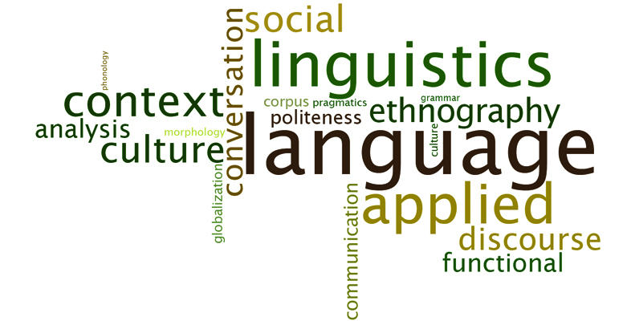

Academic Writing
In this section, we take you through some of the ways in which you can write using an academic style which is appropriate and grammatically correct. We provide you with information on what to expect and how to go about achieving a satisfactory academic style, including the use of inclusive language.
If you come from a background where English is not your first language, it will be helpful to you to look at the section on common problems in language construction. If you feel your style is too informal or colloquial, read the section on making your language sound formal and what to avoid. There is also a useful guide to using punctuation and for including the ideas from research literature in your writing.
If you would like further information, please contact staff from the Academic Language and Learning Success Program (ALLSP), who run free workshops for internal and external students on English language usage as well as developing your skills to edit and proofread your assignments.
Email: allsp@cdu.edu.au
Phone: 08 8946 7459
In this section you will find information about:
Inclusive Language
The more gender-inclusive your language is in writing, the less likely you are to alienate people or to perpetuate gender stereotypes. You can improve your use of gender-inclusive language by using some simple strategies when you write.
Learn MoreCommon problems in language construction

Having trouble in sentence construction or finding it difficult to make your wording sound higher level?. This section will help improve your academic literacy so that your language is up to tge standard fitted for University students.
Learn MoreDos and don'ts of formal writing

You want the reader to find that you are credible. You want readers to respect you. If you are rude, arrogant or sarcastic, you will not be considered credible or respectable. Your tone should be formal and professional.Don't write, "If you're smart, you'll realize my solution is the best."Be sure to write, "Evidence demonstrates that this is the most effective solution."
Learn More
Quoting, paraphrasing and summarising

Most academic writings need to use sources, and if you use sources, you must refer to sources. (Without quotation, you are plagiarism, so don't forget this step!)Before you start your research, of course, before you start writing, you need to know what citation style you need. Most academic papers use MLA or APA. However, these are not the only citation forms. You may also be asked to use other styles, including CSE or Chicago.
Learn MoreReference list
Most academic writings need to use sources, and if you use sources, you must refer to sources. (Without quotation, you are plagiarism, so don't forget this step!)Before you start your research, of course, before you start writing, you need to know what citation style you need. Most academic papers use MLA or APA. However, these are not the only citation forms. You may also be asked to use other styles, including CSE or Chicago.
Learn More- Dark Light